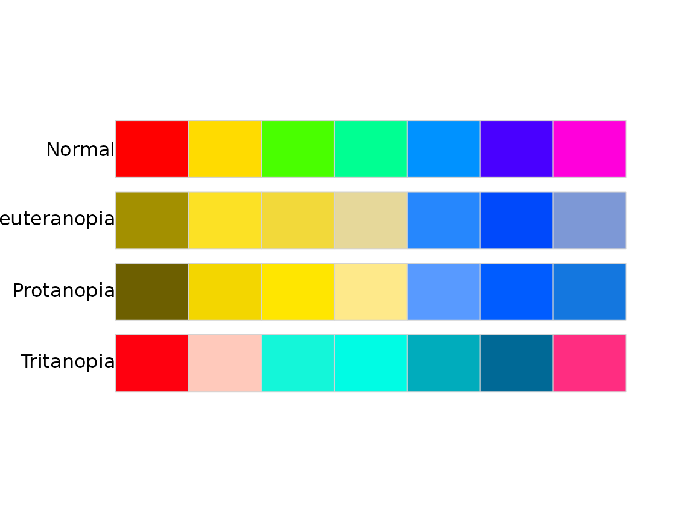

colorblindcheck: Check Color Palettes for Problems with Color Vision Deficiency
Jakub Nowosad
2025-10-09
Source:vignettes/intro-to-colorblindcheck.Rmd
intro-to-colorblindcheck.RmdDeciding if a color palette is a colorblind friendly is a hard task. This cannot be done in an entirely automatic fashion, as the decision needs to be confirmed by visual judgments. The goal of colorblindcheck is to provide tools to decide if the selected color palette is colorblind friendly, including:
-
palette_dist()- Calculation of the distances between the colors in the input palette and between the colors in simulations of the color vision deficiencies - deuteranopia, protanopia, and tritanopia. -
palette_plot()- Plotting of the original input palette and simulations of color vision deficiencies - deuteranopia, protanopia, and tritanopia. -
palette_check()- Creating summary statistics comparing the original input palette and simulations of color vision deficiencies - deuteranopia, protanopia, and tritanopia.
The work in this package was inspired by a blog post by Gregor Aisch.
Example
The colorblindcheck accepts a vector of hexadecimal
color descriptions as the input. It can be created using different
existing R functions (e.g. rainbow()) or packages (e.g. colorspace,
RColorBrewer,
rcartocolor,
etc.).
library(colorblindcheck)
rainbow_pal = rainbow(n = 7)
rainbow_pal
#> [1] "#FF0000" "#FFDB00" "#49FF00" "#00FF92" "#0092FF" "#4900FF" "#FF00DB"The primary function in this package is palette_check(),
which creates a summary comparison between the original input palette
and simulations of color vision deficiencies - deuteranopia, protanopia,
and tritanopia.
palette_check(rainbow_pal, plot = TRUE)
#> name n tolerance ncp ndcp min_dist mean_dist max_dist
#> 1 normal 7 12.13226 21 21 12.132257 61.06471 107.63470
#> 2 deuteranopia 7 12.13226 21 19 2.572062 44.29065 85.87461
#> 3 protanopia 7 12.13226 21 17 3.647681 47.63882 83.28286
#> 4 tritanopia 7 12.13226 21 20 2.025647 47.41585 83.77189The palette_check() function returns a data.frame with 4
observations and 8 variables:
-
name: original input color palette (normal), deuteranopia, protanopia, and tritanopia -
n: number of colors -
tolerance: minimal value of the acceptable difference between the colors to distinguish between them -
ncp: number of color pairs -
ndcp: number of differentiable color pairs (color pairs with distances above the tolerance value) -
min_dist: minimal distance between colors -
mean_dist: average distance between colors -
max_dist: maximal distance between colors
Additionally, a plot comparing the original input palette and simulations of color vision deficiencies - deuteranopia, protanopia, and tritanopia can be shown. This help to decide if the selected color palette is colorblind friendly.
For example, the above output shows that the minimal distance between colors in the input palette is about 12; however, the minimum distance between colors simulation of tritanopia is only about 2. It can suggest that some colors in this palette would not be distinguishable by people with color vision deficiencies.
The palette_dist() function calculates distances between
the colors in the input palette, as well as in a simulation of the
selected color vision deficiency - deuteranopia, protanopia, and
tritanopia. It allows finding which colors are the most or the least
similar and to compare the behavior of color palettes for different
color vision deficiencies. In the original rainbow_pal
object, the closest colors were the third and the fourth one (a distance
of about 12); however, the deuteranopia version has a minimal distance
of 3 between the second and third color.
# normal
palette_dist(rainbow_pal)
#> [,1] [,2] [,3] [,4] [,5] [,6] [,7]
#> [1,] NA 52.96503 85.06611 84.19100 52.61836 51.46782 39.46279
#> [2,] NA NA 29.34232 34.74051 65.68745 92.04784 80.83188
#> [3,] NA NA NA 12.13226 69.12782 81.23889 107.63470
#> [4,] NA NA NA NA 56.87222 74.19228 103.11485
#> [5,] NA NA NA NA NA 35.47760 44.20031
#> [6,] NA NA NA NA NA NA 29.94683
#> [7,] NA NA NA NA NA NA NA
# deuteranopia
palette_dist(rainbow_pal, cvd = "pro")
#> [,1] [,2] [,3] [,4] [,5] [,6] [,7]
#> [1,] NA 39.43191 42.508590 42.04093 58.64577 63.65418 55.96197
#> [2,] NA NA 3.647681 10.17970 63.89346 80.53512 69.20692
#> [3,] NA NA NA 10.08224 65.80826 83.28286 71.54135
#> [4,] NA NA NA NA 58.30889 74.33303 64.46117
#> [5,] NA NA NA NA NA 19.99978 12.31211
#> [6,] NA NA NA NA NA NA 10.57924
#> [7,] NA NA NA NA NA NA NA